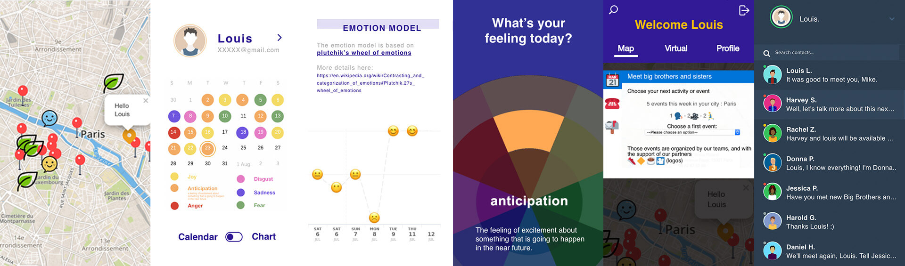

MINDSCAPE
缓解焦虑社交平台策划 结合实体地图、线上社交和情绪记录，引导年轻人表达并缓解焦虑、追踪个人情绪变化该项目是本人参加法国CRI SDG SCHOOL PARIS 2019 暑期夏令营的合作项目。 个人工作： 1、前期问题痛点提出、用户调研、平台功能策划 2、利用Adobe XD和photoshop完成原型制作 3、参与部分网站技术实现（XHTML/CSS）
实体地图 Patient-to-patient therapy
调用地图api，用户根据实时地图查看附近用户情况，同时推荐相关心理医师或咨询者。平台推荐安全的线下交流地点（例公园、心理工作室），鼓励有相同经历者线下交流，表达舒缓焦虑。
线上社交 Virtual Yard
用户可以和好友或者后台根据当前情绪值匹配的其他人进行线上交流，表达焦虑和困惑，寻求解决办法。提供音乐、游戏等娱乐形式舒缓情绪。
情绪记录 Mood tracker
每次登陆app，界面会要求用户选择目前焦虑的原因（例如考学、找工作）、当天心情和程度。用户通过情绪记录功能查看个人变化情况，正视情绪变化，查找原因作出改变。
扫码查看平台策划原型录屏（密码111111）：

点击进入Web APP平台demo：https://wmingc.github.io/CRI_Mindscape/home_bars.html